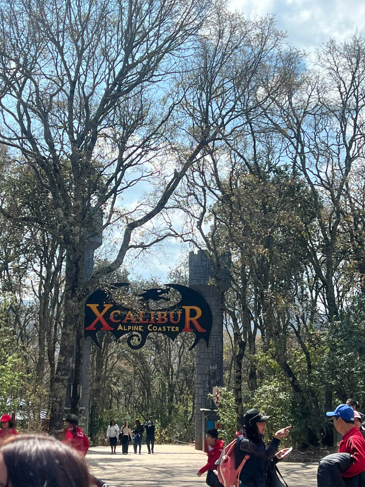
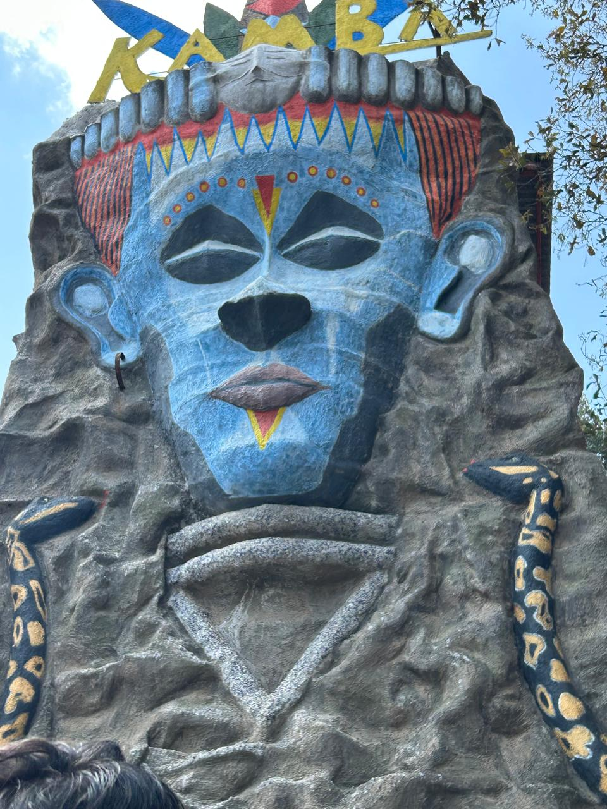
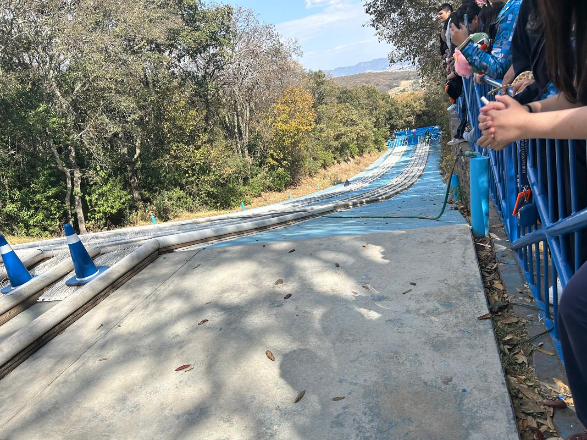

Pulsa para iniciar la expedición |
||||
|
| XCALIBUR | SUBTERRANIUM | DINOSAURIOS | TIROLESAS | LAGO | ANTÁRTICA | OAXACA | FAUNA ENDÉMICA | EDO. MÉXICO |
|
 |
|
||||
⛰️ Subterránium
|
| 🦖 ZONA JURÁSICA 🦖 | |
|
|
|
| 🌲 TIROLESA 🌲 |
|
Vuela sobre las copas de los árboles. Altura mínima: 1.40m  |
| 💧 EL LAGO DE LOS PEDALONES 💧 | |
Disfruta de un tranquilo paseo por las aguas del parque.
|
|
| ❄️ RESBALADILLA ANTÁRTICA ❄️ | |
|
 |
¡Siente la velocidad deslizándote por nuestra rampa gigante!
• Atracción familiar. • Deslizadores especiales incluidos. • ¡No te detengas hasta el final! |
| 🦋 OAXACA: BIODIVERSIDAD Y CULTURA 🦋 | |||
|
Insectos Comestibles y Ecológicos: Oaxaca es famoso por sus Chapulines (Sphenarium purpurascens), que son base de la gastronomía. También destacan las hormigas Chicatanas y el gusano de maguey.
Fauna General: En sus selvas y montañas habitan el jaguar, el tapir, el mono araña y el ocelote. Es el estado con mayor biodiversidad de México. |
Visitada por sus zonas arqueológicas y playas como Puerto Escondido. |
||
| 🐾 LABORATORIO: FAUNA ENDÉMICA DE OAXACA 🐾 | ||||
|
Oaxaca posee ecosistemas únicos en el mundo debido a su accidentada geografía (zonas montañosas, valles serranos e istmos costeros). Esto ha propiciado el desarrollo de especies que no se encuentran de forma natural en ningún otro lugar del planeta. A continuación, el reporte detallado de especies bajo resguardo e investigación biológica: |
||||
|
1. Teporingo (Conejo de los Volcanes): Aunque históricamente se asocia más con el Eje Neovolcánico de México central, se monitorean poblaciones y variantes en zonas limítrofes altas de la Sierra Madre de Oaxaca. Es un mamífero pequeño con orejas cortas y redondas que vive en zacatonal de alta montaña. 2. Mugil oaxaquensis (Lisa oaxaqueña): Es una especie de pez de agua dulce / salobre endémica de las cuencas costeras y lagunas del estado de Oaxaca. Es de vital importancia para el equilibrio del ecosistema costero. 3. Gorrión de Tehuantepec (Amphispiza bilineata opuntia / Aimophila sumichrasti): Ave canora endémica de la región del Istmo de Tehuantepec. Habita zonas áridas y matorrales espinosos. Se encuentra amenazado debido a la pérdida de su hábitat natural. 4. Ratones de los volcanes de Oaxaca (Habromys chinanteco / lepturus): Roedores arborícolas endémicos de la Sierra Juárez y la región de la Chinantla. Viven estrictamente en los húmedos bosques de niebla oaxaqueños y son indicadores clave de la salud ambiental de los bosques templados. 5. Barisia planifrons (Lagartija caimán de la Sierra Madre): Es un reptil endémico de las zonas montañosas de Oaxaca. Destaca por sus escamas duras que recuerdan a un cocodrilo miniatura y vive oculta entre la hojarasca de los bosques de pino-encino. |
|
|||
| 🐜 ESTADO DE MÉXICO: NATURALEZA Y AVENTURA 🐜 | |||
|
Santuarios de Insectos: El Edomex es el hogar principal de la Mariposa Monarca en sus bosques de oyamel. También se encuentran escarabajos de pino y una gran variedad de polillas de montaña.
Fauna General: Destaca el Teporingo (conejo de los volcanes), el venado cola blanca, coyotes y el águila real en las zonas altas. |
Famoso por las pirámides del Sol y la Luna y sus Pueblos Mágicos. |
||